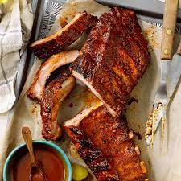

Slow Cooker Baby Back Ribs

Description
Slow Cooker Barbecue Ribs easy and absolutely DELICIOUS! Fall-off-the-bone tender ribs finished off in the oven to create the best, barbecue sticky glaze and caramelised edges! The 4-ingredient marinade is the hands down the best marinade smothered on ribs.
Ingredients
- 3 pounds baby back ribs, trimmed
- salt and ground black pepper, to taste
- ½ cup water
- ½ onion, sliced
- 1 clove garlic, minced
- 1 (18 ounce) bottle barbeque sauce
Steps
- Season ribs with salt and pepper.
- Pour 1/2 cup water into the slow cooker, then add ribs. Scatter onion and garlic over top. Cover and cook on Low for 8 hours or High for 4 hours.
- When the ribs are almost finished, preheat the oven to 375 degrees F (190 degrees C).
- Transfer ribs from the slow cooker to a baking sheet; discard onion and garlic. Coat ribs with barbeque sauce.
- Bake ribs in the preheated oven until sauce caramelizes and sticks to meat, 10 to 15 minutes.